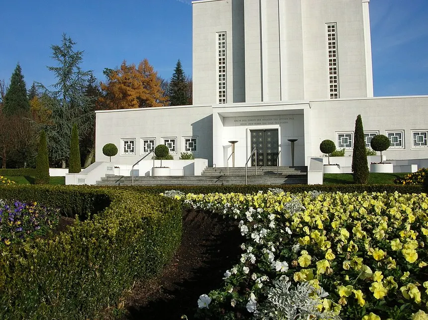
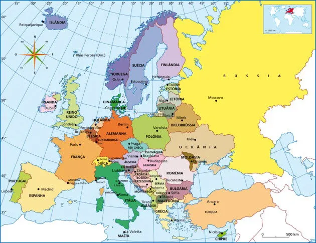

O Templo de Berna está localizado na charmosa cidade de Münchenbuchsee, próxima à capital da Suíça. Ele tem um significado histórico muito especial para a Igreja, pois foi o primeiro templo dedicado na Europa e o primeiro a utilizar um modelo de recintos em que as ordenanças pudessem ser traduzidas simultaneamente para vários idiomas, servindo aos santos de todo o continente.
Inaugurado em 1955, o templo possui um design exterior marcante com belos jardins floridos que transmitem paz e reverência. Sua arquitetura inspiradora combina a elegância europeia com a simplicidade sagrada, criando um ambiente perfeito para que os membros sintam a presença do Senhor e deixem de lado as preocupações do mundo.

O Käsebrötchen suíço (ou Chäsbrötli, no dialeto suíço-alemão) é um pãozinho tradicional e muito popular na Suíça, preparado com uma massa fermentada macia de farinha de trigo, leite e manteiga, misturada e coberta com queijos típicos de sabor marcante como o Gruyère e o Emmental. Assado até ficar dourado com uma crosta de queijo gratinado e crocante por fora e miolo fofo por dentro, é consumido quente ou frio no café da manhã, no lanche da tarde (conhecido como Zvieri) ou em feiras e padarias, muitas vezes aromatizado com um toque de noz-moscada ou páprica.
Para os santos dos últimos dias da Europa, este templo é um farol de retidão e uma verdadeira Casa do Senhor. Ele é o lugar onde as famílias podem ser seladas para a eternidade, proporcionando paz espiritual, renovação de fé e a certeza de que o evangelho restaurado abençoa vidas em todas as nações e línguas.
